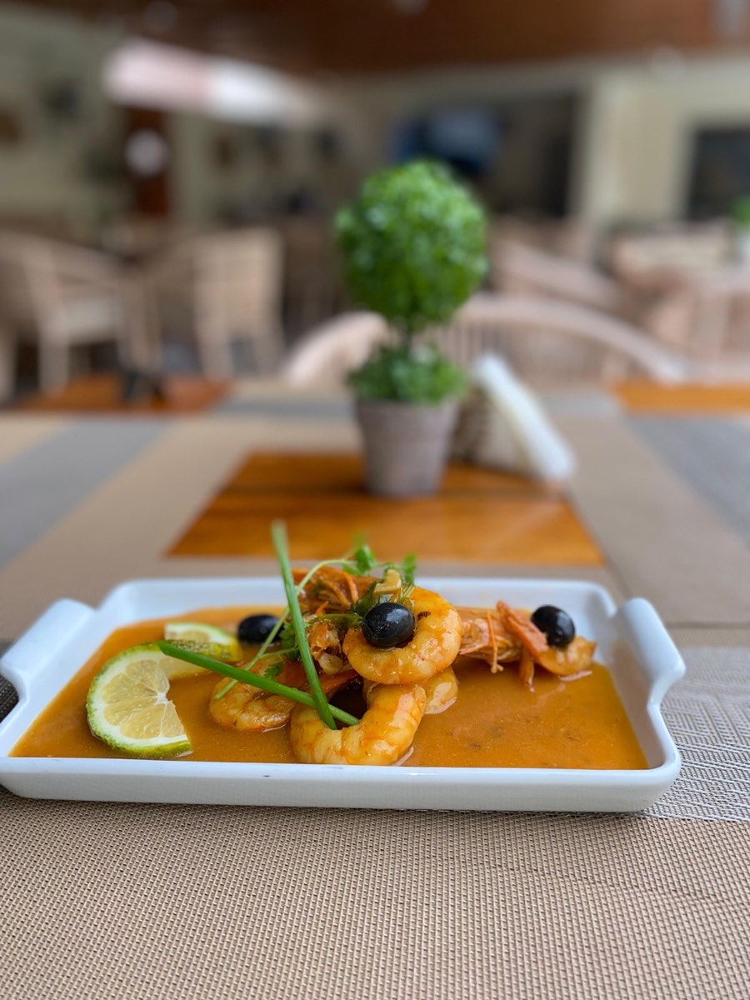

A sua mesa começa aqui
Bem-vindo ao La Femme Sabores
Partilhe o seu contacto para conhecer o nosso menu. Também pode continuar sem indicar o número.
O contacto é usado apenas para acesso ao menu e comunicações do La Femme Sabores.
A sua mesa começa aqui
Partilhe o seu contacto para conhecer o nosso menu. Também pode continuar sem indicar o número.
O contacto é usado apenas para acesso ao menu e comunicações do La Femme Sabores.

Uma cozinha generosa, feita para celebrar Angola à mesa.
Não encontrámos nenhum prato ou bebida com esse termo.